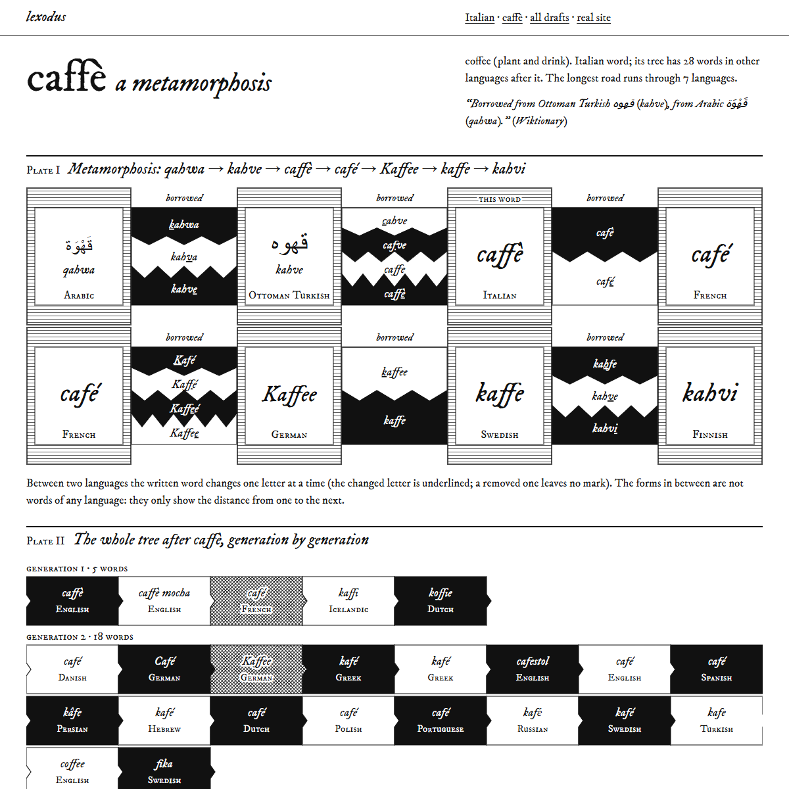
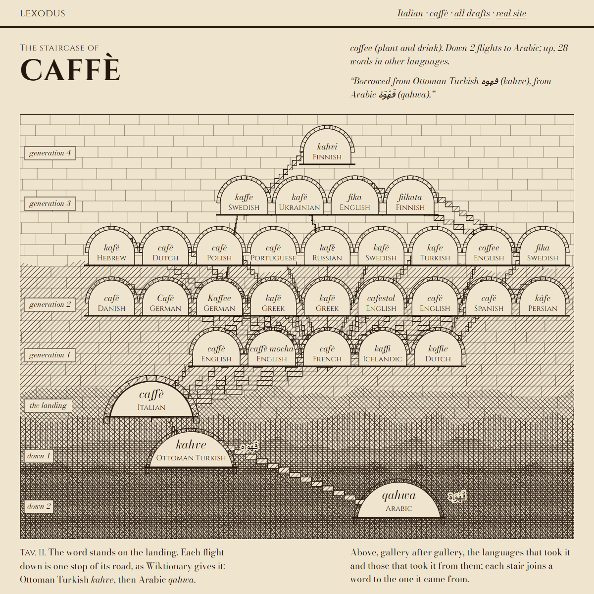
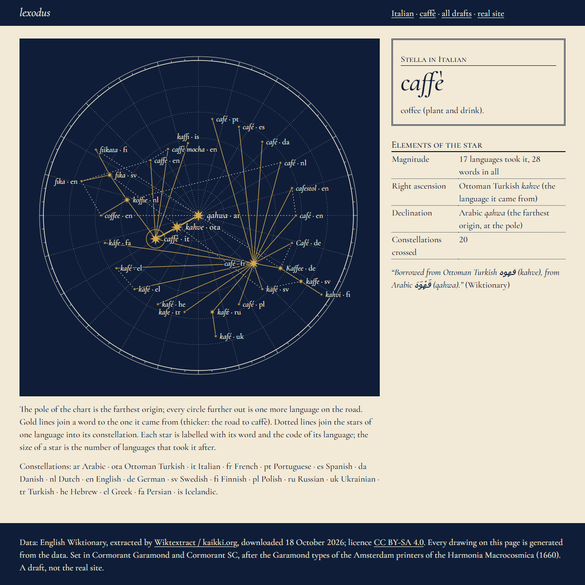
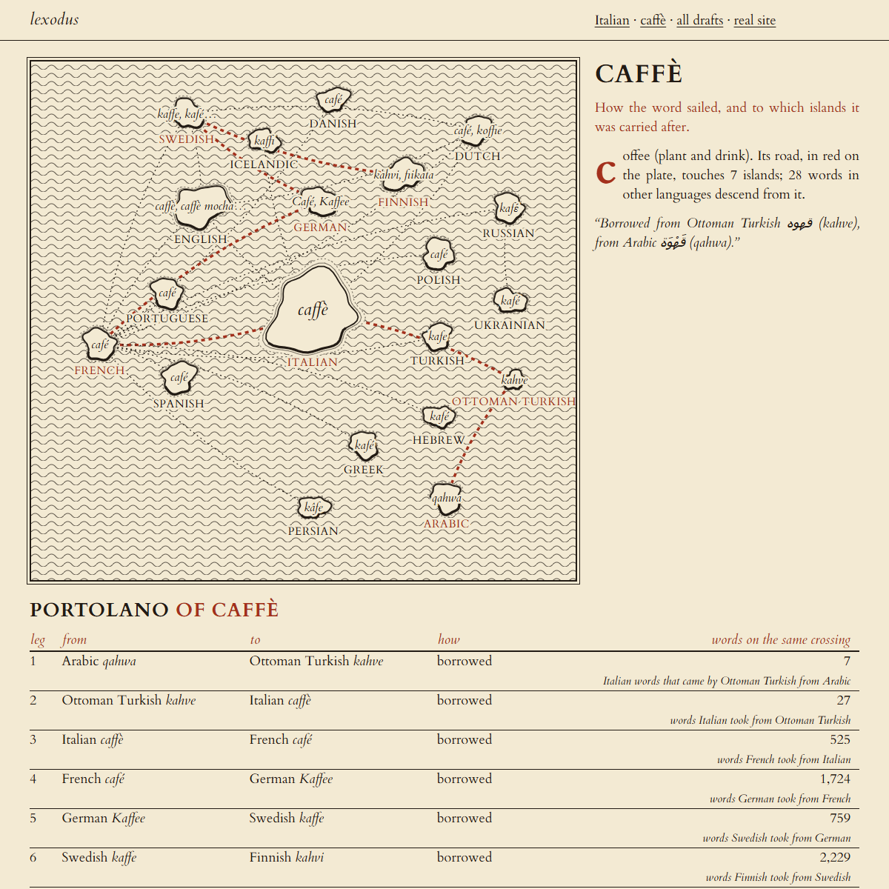
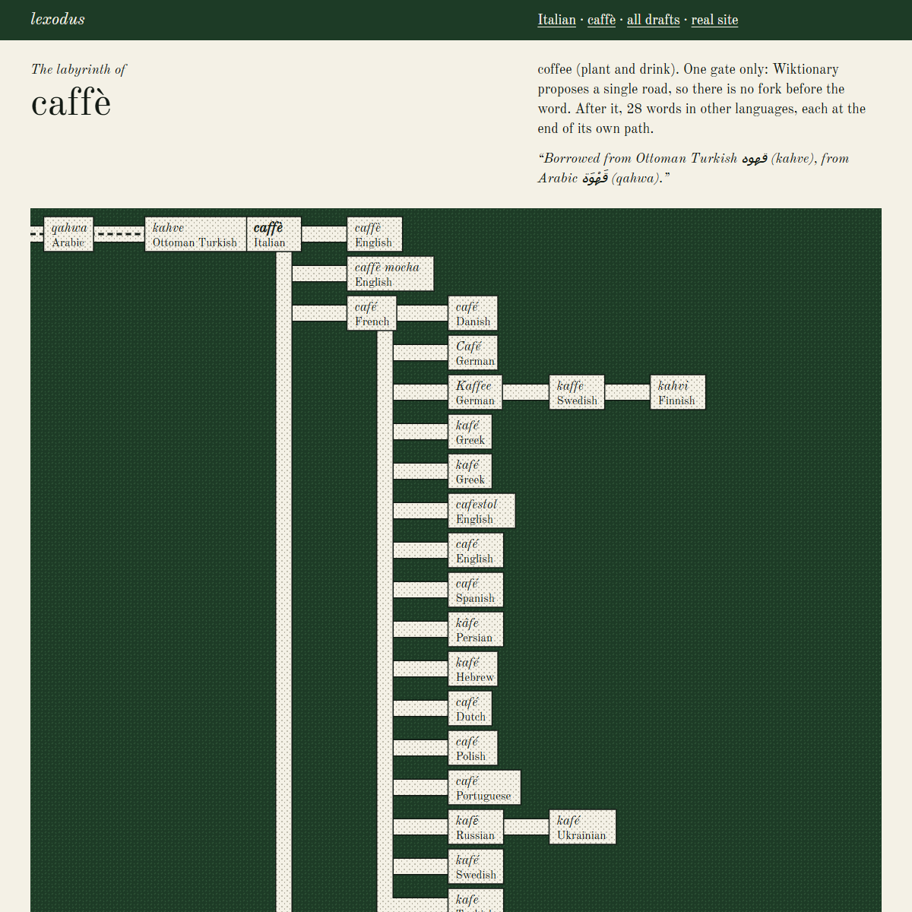
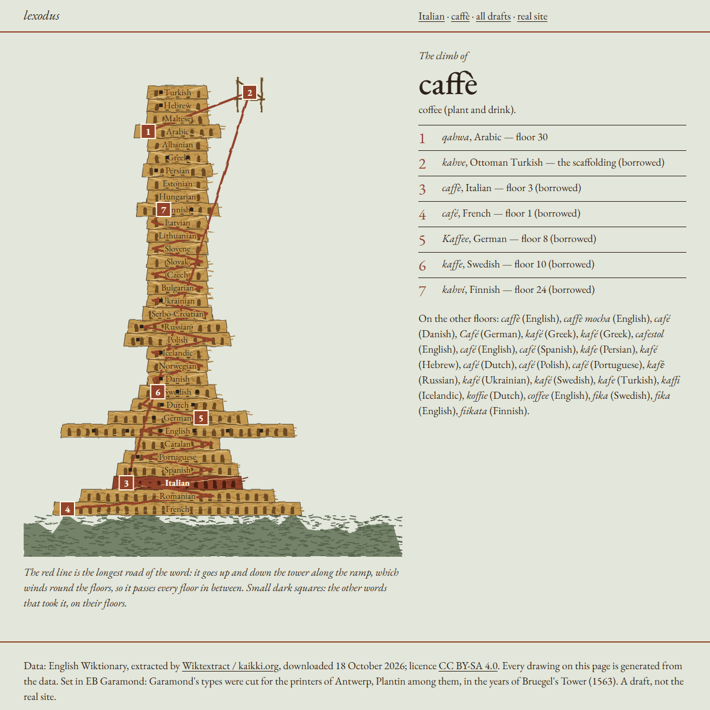

lexodus — bozze 5: mondi che fanno quello che fanno le parole
Sei mondi, da Escher, Piranesi, Cellarius, gli isolari, Borges e Bruegel, la cui struttura si comporta come le parole: una parola andata e tornata è una scala chiusa, un’etimologia incerta è un bivio, una catena è una rotta. Versione ridotta: per ognuna solo la pagina dell’italiano e la scheda di caffè, con i dati veri e i disegni generati dai dati. Il sito vero non cambia.
-
1. Escher
L’italiano è un blocco con tre gravità (preso da, dato a, origini lontane), una scala per lingua con un gradino per ogni raddoppio delle parole; le parole andate e tornate sono scale di Penrose chiuse; caffè si trasforma lettera per lettera da qahwa a kahvi, e le due lingue che si sono date parole a vicenda si disegnano come le Mani.


-
2. Piranesi
L’italiano è una sala delle Carceri: un arco per ogni origine lontana, alto quanto le sue parole, passerelle per le lingue di passaggio, catene e carrucole per le parole con più origini proposte; caffè scende di rampa in rampa fino all’arabo nel buio e sale, galleria dopo galleria, verso le lingue che l’hanno presa.


-
3. Celeste
Le parole italiane prese da altre lingue sono stelle: ognuna sta dove la tirano le lingue che l’hanno presa, grande quanto il loro numero; caffè è una carta del cielo con l’arabo al polo, un cerchio per ogni generazione e le costellazioni delle lingue tracciate fra le stelle.


-
4. Isolario
L’italiano è un’isola con un porto per ogni lingua da cui ha preso parole: le rotte arrivano punteggiate dalle altre isole (inventate, disposte per famiglia) e ripartono in rosso; caffè ha il suo portolano, dove le miglia sono il numero di parole che hanno fatto la stessa traversata.


-
5. Sentieri
L’italiano è un giardino di siepi: si entra dalle lingue da cui ha preso e si esce verso quelle a cui ha dato; i doppioni sono sentieri che si separano e si ricongiungono, le parole con più origini proposte sono bivi; caffè è il labirinto del suo albero con la strada segnata.


-
6. Babele
Le 33 lingue sono i piani della torre, per famiglia, più larghi dove si sono scambiate più parole; il latino e le lingue antiche sono la roccia, le altre l’impalcatura; il piano dell’italiano visto da vicino riceve le scale dai piani da cui ha preso; caffè sale e scende la torre lungo la rampa.

